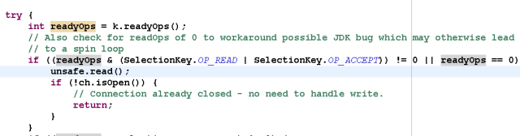
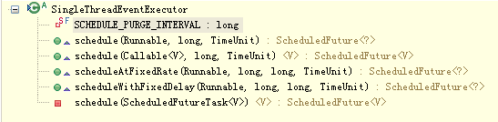

Netty 多线程模型
背景
Java线程模型的演进
单线程
时间回到十几年前，那时主流的CPU都还是单核（除了商用高性能的小机），CPU的核心频率是机器最重要的指标之一
在Java领域当时比较流行的是单线程编程，对于CPU密集型的应用程序而言， 频繁的通过多线程进行协作和抢占时间片反而会降低性能
多线程
随着硬件性能的提升，CPU的核数越来越越多，很多服务器标配已经达到32或64核 通过多线程并发编程，可以充分利用多核CPU的处理能力，提升系统的处理效率和并发性能
从2005年开始，随着多核处理器的逐步普及，java的多线程并发编程也逐渐流行起来，当时商用主流的JDK版本是1.4，用户可以通过 new Thread() 的方式创建新的线程
由于JDK1.4并没有提供类似线程池这样的线程管理容器，多线程之间的同步、协作、创建和销毁等工作都需要用户自己实现。由于 创建和销毁线程是个相对比较重量级的操作，因此，这种原始的多线程编程效率和性能都不高
线程池
为了提升Java多线程编程的效率和性能，降低用户开发难度。JDK1.5推出了 java.util.concurrent 并发编程包 在并发编程类库中，提供了 线程池、线程安全容器、原子类等新的类库，极大的提升了Java多线程编程的效率，降低了开发难度
从JDK1.5开始， 基于线程池的并发编程已经成为Java多核编程的主流
Reactor模型
无论是C++还是Java编写的网络框架，大多数都是基于Reactor模式进行设计和开发
Reactor 模式 基于 事件驱动 ，特别适合处理 海量的I/O事件
单线程模型
Reactor 单线程 模型， 所有的IO操作 都在 同一个NIO线程 上面完成，NIO线程的职责如下：
- 作为NIO服务端，接收客户端的TCP连接
- 作为NIO客户端，向服务端发起TCP连接
- 读取通信对端的请求或者应答消息
- 向通信对端发送消息请求或者应答消息
Reactor单线程模型示意图如下所示：
由于Reactor模式使用的是 异步非阻塞IO ，所有的IO操作都不会导致阻塞，理论上一个线程可以独立处理所有IO相关的操作。从架构层面看，一个NIO线程确实可以完成其承担的职责。例如：
- 通过 Acceptor 类： 接收 客户端的TCP连接请求 消息
- 链路建立成功之后
- 通过 Dispatch ： 对应的ByteBuffer 派发 到指定的 Handler 上进行 消息解码
- 用户线程 可以把 消息编码 通过 NIO线程 将消息 发送给客户端
对于一些 小容量应用场景 ，可以使用单线程模型
对于高负载、大并发的应用场景却不合适，主要原因如下： 一个NIO线程同时处理成百上千的链路，性能上无法支撑 即便NIO线程的CPU负荷达到100%，也无法满足海量消息的编码、解码、读取和发送 当NIO线程负载过重之后，处理速度将变慢，这会导致大量客户端连接超时 超时之后往往会进行重发，这更加重了NIO线程的负载 最终会导致大量消息积压和处理超时，成为系统的性能瓶颈 一旦NIO线程意外跑飞，或者进入死循环 会导致整个系统通信模块不可用，不能接收和处理外部消息，造成节点故障 为了解决这些问题，演进出了 Reactor多线程模型
多线程模型
Rector 多线程 模型与单线程模型最大的区别就是有 一组NIO线程 处理IO操作 ，它的原理图如下：
Reactor多线程模型的特点：
- 有专门一个NIO线程 Acceptor线程 用于监听服务端， 接收 客户端的TCP连接请求
- 网络IO操作读、写等由 一个NIO线程池 负责
- 线程池可以采用 标准的JDK线程池 实现
- 一个任务队列
- N个可用的线程
- 这些NIO线程负责 消息的读取 、 解码 、 编码 和 发送
- 线程池可以采用 标准的JDK线程池 实现
- 1个NIO线程可以同时处理N条链路，但是1个链路只对应1个NIO线程 ，防止发生并发操作问题
在 绝大多数场景 下，Reactor多线程模型都可以满足性能需求
在极个别特殊场景中， 一个NIO线程负责监听和处理所有的客户端连接可能会存在性能问题 例如并发百万客户端连接，或者服务端需要对客户端握手进行安全认证，但是认证本身非常损耗性能 在这类场景下，单独一个Acceptor线程可能会存在性能不足问题 为了解决性能问题，产生了第三种Reactor线程模型 主从Reactor多线程模型
主从Reactor多线程模型
主从Reactor线程模型 的特点是：
- 服务端用于 接收客户端连接 的不再是个 1个单独的NIO线程 ，而是一个 独立的NIO线程池
- Acceptor 接收 到 客户端TCP连接请求 处理完成 后（可能包含接入 认证 等）
- 将 新创建 的 SocketChannel 注册 到 IO线程池 的 某个IO线程 上
- 由它负责 SocketChannel 的 读写 和 编解码 工作
- 将 新创建 的 SocketChannel 注册 到 IO线程池 的 某个IO线程 上
Acceptor线程池仅仅只用于 客户端的登陆 、 握手和安全认证 一旦链路建立成功，就将链路注册到后端subReactor线程池的IO线程上，由IO线程负责后续的IO操作
它的线程模型如下图所示：
利用主从NIO线程模型，可以解决1个服务端监听线程无法有效处理所有客户端连接的性能不足问题
它的工作流程总结如下：
- 从主线程池中随机选择一个Reactor线程作为Acceptor线程，用于绑定监听端口，接收客户端连接
- Acceptor线程接收客户端连接请求之后创建新的SocketChannel，将其注册到主线程池的其它Reactor线程上，由其负责接入认证、IP黑白名单过滤、握手等操作
- 业务层的链路正式建立，将 SocketChannel 从 主线程池的Reactor线程 的 多路复用器 上摘除， 重新注册 到 Sub线程池的线程 上，用于处理I/O的读写操作
Netty线程模型
事实上，Netty的线程模型与上面介绍的三种Reactor线程模型相似
下面通过Netty服务端和客户端的线程处理流程图来介绍Netty的线程模型
服务端线程模型
一种比较流行的做法是服务端监听线程和IO线程分离，类似于Reactor的多线程模型，它的工作原理图如下：
下面结合Netty的源码，对服务端创建线程工作流程进行介绍：
从用户线程发起创建服务端
第一步，从用户线程发起创建服务端操作，代码如下：
通常情况下，服务端的创建是在用户进程启动的时候进行，因此一般由Main函数或者启动类负责创建， 服务端的创建由业务线程负责完成
在创建服务端的时候实例化了2个EventLoopGroup：
1个EventLoopGroup实际就是一个EventLoop线程组，负责管理EventLoop的申请和释放*
- EventLoopGroup管理的线程数：可以通过构造函数设置，如果没有设置，默认取 -Dio.netty.eventLoopThreads ，如果该系统参数也没有指定，则为可用的CPU内核数 * 2
- bossGroup线程组:：实际就是Acceptor线程池，负责处理客户端的TCP连接请求，如果系统只有一个服务端端口需要监听，则建议bossGroup线程组线程数设置为1
- workerGroup：是真正负责I/O读写操作的线程组，通过ServerBootstrap的group方法进行设置，用于后续的Channel绑定
Acceptor线程绑定监听端口，启动NIO服务端
第二步，Acceptor线程绑定监听端口，启动NIO服务端
从bossGroup中选择一个Acceptor线程监听服务端，相关代码如下：
其中group()返回的就是bossGroup，next方法用于从线程组中获取可用线程来选择Acceptor线程，代码如下：
服务端Channel创建完成之后，将其注册到多路复用器Selector上，用于接收客户端的TCP连接，核心代码如下：
监听客户端连接
如果监听到客户端连接，则创建客户端SocketChannel连接，重新注册到workerGroup的IO线程上
首先看Acceptor如何处理客户端的接入：

调用unsafe的read（）方法，对于NioServerSocketChannel，它调用了NioMessageUnsafe的read()方法，代码如下：
最终它会调用NioServerSocketChannel的doReadMessages方法，代码如下：
其中childEventLoopGroup就是之前的workerGroup, 从中选择一个I/O线程负责网络消息的读写
监听网络读事件
第四步，选择IO线程之后，将SocketChannel注册到多路复用器上，监听READ操作：

处理读写事件
处理网络的I/O读写事件，核心代码如下：
客户端线程模型
相比于服务端，客户端的线程模型简单一些，它的工作原理如下：
建立客户端连接
第一步，由用户线程发起客户端连接，示例代码如下：
相比于服务端，客户端只需要创建一个EventLoopGroup，因为它不需要独立的线程去监听客户端连接，也没必要通过一个单独的客户端线程去连接服务端。Netty是 异步事件驱动的NIO框架，它的连接和所有IO操作都是异步的，因此不需要创建单独的连接线程 。相关代码如下：
当前的group()就是之前传入的EventLoopGroup，从中获取可用的IO线程EventLoop，然后作为参数设置到新创建的NioSocketChannel中
发起连接操作
第二步，发起连接操作，判断连接结果，代码如下：
@Override protected boolean doConnect(SocketAddress remoteAddress, SocketAddress localAddress) throws Exception { if (localAddress != null) { javaChannel().socket().bind(localAddress); } boolean success = false; try { boolean connected = javaChannel().connect(remoteAddress); if (!connected) { selectionKey().interestOps(SelectionKey.OP_CONNECT); } success = true; return connected; } finally { if (!success) { doClose(); } } }
判断连接结果：
- 如果没有连接成功：则监听连接网络操作位SelectionKey.OP_CONNECT
- 如果连接成功：则调用pipeline().fireChannelActive()将监听位修改为READ
Selector发起轮询操作
第三步，由NioEventLoop的多路复用器轮询连接操作结果，代码如下：
if ((readyOps & SelectionKey.OP_CONNECT) != 0) { // remove OP_CONNECT as otherwise Selector.select(..) will always return without blocking // See https://github.com/netty/netty/issues/924 int ops = k.interestOps(); ops &= ~SelectionKey.OP_CONNECT; k.interestOps(ops); unsafe.finishConnect(); }
判断连接结果：
public final void finishConnect() { // Note this method is invoked by the event loop only if the connection attempt was // neither cancelled nor timed out. assert eventLoop().inEventLoop(); try { boolean wasActive = isActive(); doFinishConnect(); fulfillConnectPromise(connectPromise, wasActive);
如果或连接成功，重新设置监听位为READ：
@Override protected void doBeginRead() throws Exception { // Channel.read() or ChannelHandlerContext.read() was called if (inputShutdown) { return; } final SelectionKey selectionKey = this.selectionKey; if (!selectionKey.isValid()) { return; } readPending = true; final int interestOps = selectionKey.interestOps(); if ((interestOps & readInterestOp) == 0) { selectionKey.interestOps(interestOps | readInterestOp); } }
I/O读写
第四步，由NioEventLoop线程负责I/O读写，同服务端
总结
客户端线程模型如下：
- 由用户线程负责初始化客户端资源，发起连接操作
- 如果连接成功，将SocketChannel注册到IO线程组的NioEventLoop线程中，监听读操作位
- 如果没有立即连接成功，将SocketChannel注册到IO线程组的NioEventLoop线程中，监听连接操作位
- 连接成功之后，修改监听位为READ，但是不需要切换线程
Reactor线程NioEventLoop
NioEventLoop介绍
NioEventLoop是Netty的Reactor线程，它的职责如下：
- 服务端Acceptor线程：负责处理客户端的请求接入
- 客户端Connecor线程：负责注册监听连接操作位，用于判断异步连接结果
- IO线程：监听网络读操作位，负责从SocketChannel中读取报文
- IO线程：负责向SocketChannel写入报文发送给对方，如果发生写半包，会自动注册监听写事件，用于后续继续发送半包数据，直到数据全部发送完成
- 定时任务线程：执行定时任务，例如链路空闲检测和发送心跳消息等
- 线程执行器：执行普通的任务线程(Runnable)
在服务端和客户端线程模型章节我们已经详细介绍了NioEventLoop如何处理网络IO事件，下面简单看下它是如何处理定时任务和执行普通的Runnable的
执行用户自定义Task
首先NioEventLoop继承SingleThreadEventExecutor，这就意味着它实际上是一个线程个数为1的线程池，类继承关系如下所示：
其中，线程池和任务队列定义如下：
private final EventExecutorGroup parent; private final Queue<Runnable> taskQueue; private final Thread thread; private final Semaphore threadLock = new Semaphore(0); private final Set<Runnable> shutdownHooks = new LinkedHashSet<Runnable>();
对于用户而言，直接调用NioEventLoop的execute(Runnable task)方法即可执行自定义的Task，代码实现如下：
@Override public void execute(Runnable task) { if (task == null) { throw new NullPointerException("task"); } boolean inEventLoop = inEventLoop(); if (inEventLoop) { addTask(task); } else { startThread(); addTask(task); if (isShutdown() && removeTask(task)) { reject(); } } if (!addTaskWakesUp && wakesUpForTask(task)) { wakeup(inEventLoop); } }
实现定时任务
NioEventLoop实现ScheduledExecutorService：
通过调用SingleThreadEventExecutor的schedule系列方法，可以在NioEventLoop中执行Netty或者用户自定义的定时任务，接口定义如下：

NioEventLoop设计原理
串行化设计避免线程竞争
当系统在运行过程中，如果频繁的进行线程上下文切换，会带来额外的性能损耗。多线程并发执行某个业务流程，业务开发者还需要时刻对线程安全保持警惕，哪些数据可能会被并发修改，如何保护？这不仅降低了开发效率，也会带来额外的性能损耗
串行执行Handler链
为了解决上述问题，Netty采用了串行化设计理念，从消息的读取、编码以及后续Handler的执行，始终都由IO线程NioEventLoop负责，这就意外着整个流程不会进行线程上下文的切换，数据也不会面临被并发修改的风险，对于用户而言，甚至不需要了解Netty的线程细节，这确实是个非常好的设计理念，它的工作原理图如下：
- 一个NioEventLoop聚合了一个多路复用器Selector，因此 可以处理成百上千的客户端连接
- Netty的处理策略是每当有一个新的客户端接入，则从NioEventLoop线程组中顺序获取一个可用的NioEventLoop，当到达数组上限之后，重新返回到0，通过这种方式，可以 基本保证各个NioEventLoop的负载均衡
- 一个客户端连接只注册到一个NioEventLoop上，这样就 避免了多个IO线程 去并发操作它
Netty通过串行化设计理念降低了用户的开发难度，提升了处理性能。利用线程组实现了多个串行化线程水平并行执行，线程之间并没有交集，这样既可以充分利用多核提升并行处理能力，同时避免了线程上下文的切换和并发保护带来的额外性能损耗
定时任务与时间轮算法
在Netty中，有很多功能依赖定时任务，比较典型的有两种：
- 客户端连接超时控制
- 链路空闲检测
一种比较常用的设计理念是在NioEventLoop中聚合JDK的定时任务线程池ScheduledExecutorService，通过它来执行定时任务。这样做单纯从性能角度看不是最优，原因有如下三点：
- 在IO线程中聚合了一个独立的定时任务线程池，这样在处理过程中会存在线程上下文切换问题，这就打破了Netty的串行化设计理念
- 存在多线程并发操作问题，因为定时任务Task和IO线程NioEventLoop可能同时访问并修改同一份数据
- JDK的ScheduledExecutorService从性能角度看，存在性能优化空间
最早面临上述问题的是操作系统和协议栈，例如TCP协议栈，其可靠传输依赖超时重传机制，因此每个通过TCP传输的 packet 都需要一个 timer来调度 timeout 事件 这类超时可能是海量的，如果为每个超时都创建一个定时器，从性能和资源消耗角度看都是不合理的
定时轮
Netty的定时任务调度基于时间轮算法调度：
根据George Varghese和Tony Lauck 1996年的论文提出了一种定时轮的方式来管理和维护大量的timer调度
定时轮是一种数据结构，其主体是一个循环列表，每个列表中包含一个称之为slot的结构，它的原理图如下：
定时轮的工作原理可以类比于时钟，如上图箭头（指针）按某一个方向按固定频率轮动，每一次跳动称为一个tick。这样可以看出定时轮由个3个重要的属性参数：
- ticksPerWheel: 一轮的tick数
- tickDuration: 一个tick的持续时间
- timeUnit: 时间单位
例如当ticksPerWheel=60，tickDuration=1，timeUnit=秒，这就和时钟的秒针走动完全类似了
时间轮的执行由NioEventLoop来负责检测，首先看任务队列中是否有超时的定时任务和普通任务，如果有则按照比例循环执行这些任务，代码如下：
@Override protected void run() { for (;;) { boolean oldWakenUp = wakenUp.getAndSet(false); try { if (hasTasks()) { selectNow(); } else {
如果没有需要理解执行的任务，则调用Selector的select方法进行等待，等待的时间为定时任务队列中第一个超时的定时任务时延，代码如下：
private void select(boolean oldWakenUp) throws IOException { Selector selector = this.selector; try { int selectCnt = 0; long currentTimeNanos = System.nanoTime(); long selectDeadLineNanos = currentTimeNanos + delayNanos(currentTimeNanos); for (;;) { long timeoutMillis = (selectDeadLineNanos - currentTimeNanos + 500000L) / 1000000L; if (timeoutMillis <= 0) { if (selectCnt == 0) { selector.selectNow(); selectCnt = 1; } break; } int selectedKeys = selector.select(timeoutMillis);
从定时任务Task队列中弹出delay最小的Task，计算超时时间，代码如下：
protected long delayNanos(long currentTimeNanos) { ScheduledFutureTask<?> scheduledTask = peekScheduledTask(); if (scheduledTask == null) { return SCHEDULE_PURGE_INTERVAL; } return scheduledTask.delayNanos(currentTimeNanos); }
经过周期tick之后，扫描定时任务列表，将超时的定时任务移除到普通任务队列中，等待执行，相关代码如下：
private void fetchFromScheduledTaskQueue() { if (hasScheduledTasks()) { long nanoTime = AbstractScheduledEventExecutor.nanoTime(); for (;;) { Runnable scheduledTask = pollScheduledTask(nanoTime); if (scheduledTask == null) { break; } taskQueue.add(scheduledTask); } } }
检测和拷贝任务完成之后，就执行超时的定时任务，代码如下：
protected boolean runAllTasks() { fetchFromScheduledTaskQueue(); Runnable task = pollTask(); if (task == null) { return false; } for (;;) { try { task.run(); } catch (Throwable t) { logger.warn("A task raised an exception.", t); } task = pollTask(); if (task == null) { lastExecutionTime = ScheduledFutureTask.nanoTime(); return true; } } }
为了保证定时任务的执行不会因为过度挤占IO事件的处理，Netty提供了IO执行比例供用户设置，用户可以设置分配给IO的执行比例， 防止因为海量定时任务的执行导致IO处理超时或者积压
因为获取系统的纳秒时间是件耗时的操作，所以Netty每执行64个定时任务检测一次是否达到执行的上限时间，达到则退出。如果没有执行完，放到下次Selector轮询时再处理，给IO事件的处理提供机会，代码如下：
// Check timeout every 64 tasks because nanoTime() is relatively expensive. // XXX: Hard-coded value - will make it configurable if it is really a problem. if ((runTasks & 0x3F) == 0) { lastExecutionTime = ScheduledFutureTask.nanoTime(); if (lastExecutionTime >= deadline) { break; } } task = pollTask(); if (task == null) { lastExecutionTime = ScheduledFutureTask.nanoTime(); break; }
聚焦而不是膨胀
Netty是个异步高性能的NIO框架，它并不是个业务运行容器，因此它 不需要也不应该提供业务容器和业务线程 。合理的设计模式是Netty 只负责提供和管理NIO线程 ，其它的业务层线程模型由用户自己集成，Netty不应该提供此类功能，只要将分层划分清楚，就会更有利于用户集成和扩展
令人遗憾的是在Netty 3系列版本中，Netty提供了类似Mina异步Filter的ExecutionHandler，它聚合了JDK的线程池java.util.concurrent.Executor，用户异步执行后续的Handler
ExecutionHandler是为了解决部分用户Handler可能存在执行时间不确定而导致IO线程被意外阻塞或者挂住，从需求合理性角度分析这类需求本身是合理的，但是Netty提供该功能却并不合适。原因总结如下：
- 它打破了Netty坚持的串行化设计理念，在消息的接收和处理过程中发生了线程切换并引入新的线程池，打破了自身架构坚守的设计原则，实际是一种架构妥协
- 潜在的线程并发安全问题，如果异步Handler也操作它前面的用户Handler，而用户Handler又没有进行线程安全保护，这就会导致隐蔽和致命的线程安全问题
- 用户开发的复杂性，引入ExecutionHandler，打破了原来的ChannelPipeline串行执行模式，用户需要理解Netty底层的实现细节，关心线程安全等问题，这会导致得不偿失
鉴于上述原因，Netty的后续版本彻底删除了ExecutionHandler，而且也没有提供类似的相关功能类，把精力聚焦在Netty的IO线程NioEventLoop上，这无疑是一种巨大的进步，Netty重新开始聚焦在IO线程本身，而不是提供用户相关的业务线程模型
Netty线程开发最佳实践
时间可控的简单业务
如果业务非常简单，执行时间非常短，不需要与外部网元交互、访问数据库和磁盘，不需要等待其它资源，则建议 直接在业务ChannelHandler 中执行，不需要再启业务的线程或者线程池。避免线程上下文切换，也不存在线程并发问题
复杂和时间不可控业务
对于此类业务，不建议直接在业务ChannelHandler中启动线程或者线程池处理，建议 将不同的业务统一封装成Task，统一投递到后端的业务线程池中进行处理
过多的业务ChannelHandler会带来开发效率和可维护性问题，不要把Netty当作业务容器，对于大多数复杂的业务产品，仍然需要集成或者开发自己的业务容器，做好和Netty的架构分层
业务线程避免直接操作ChannelHandler
对于ChannelHandler，IO线程和业务线程都可能会操作，因为业务通常是多线程模型，这样就会存在多线程操作ChannelHandler。为了尽量避免多线程并发问题，建议按照Netty自身的做法，通过将 操作封装成独立的Task由NioEventLoop统一执行 ，而不是业务线程直接操作，相关代码如下所示：

如果你确认并发访问的数据或者并发操作是安全的，则无需多此一举，这个需要根据具体的业务场景进行判断，灵活处理
总结
尽管Netty的线程模型并不复杂，但是如何合理利用Netty开发出高性能、高并发的业务产品，仍然是个有挑战的工作。只有充分理解了Netty的线程模型和设计原理，才能开发出高质量的产品